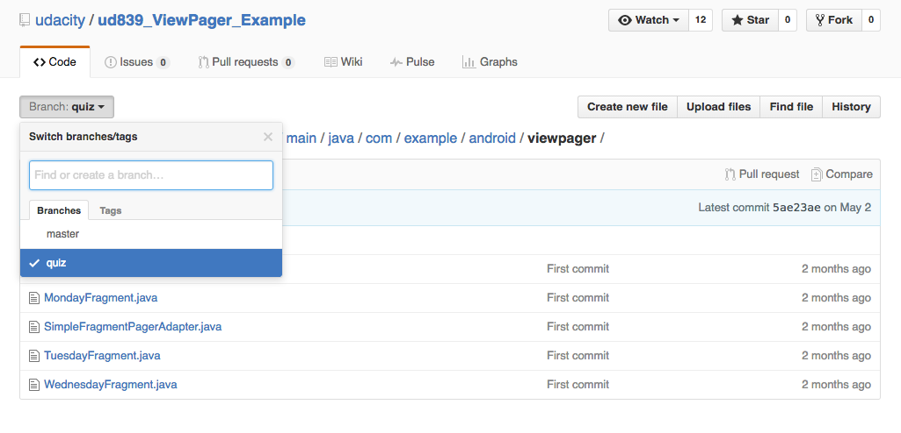
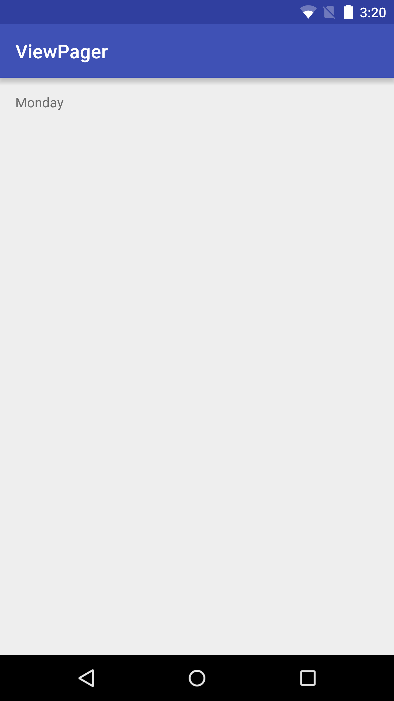
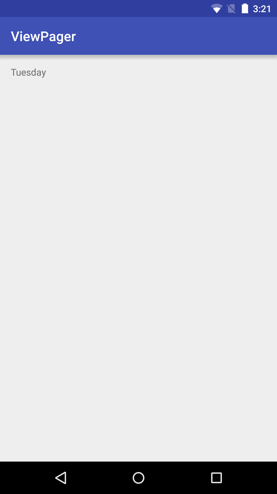
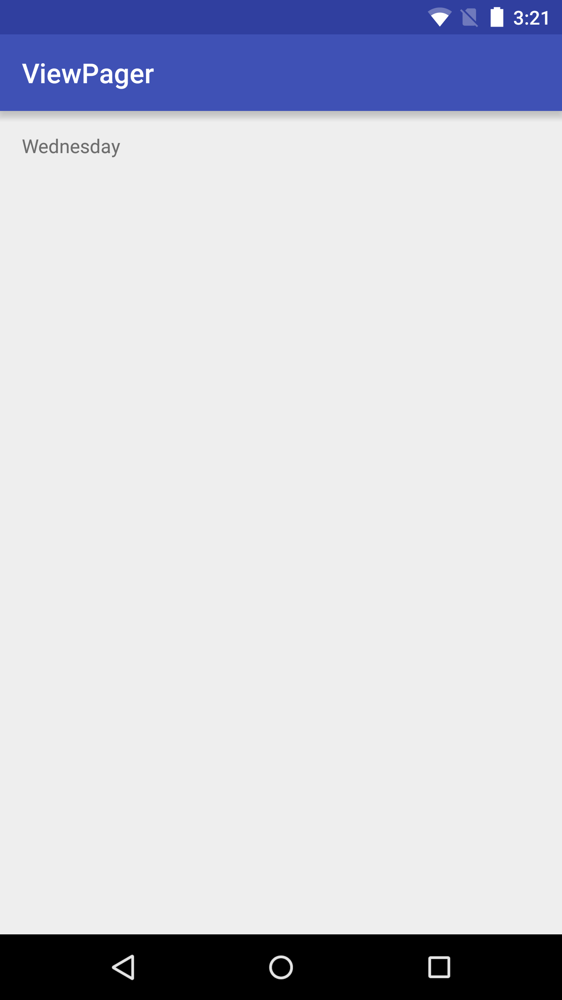

08. Sample ViewPager
Step 1: Review a Sample App
Sample ViewPager
Question:
Let’s play with a sample app to explore how a ViewPager works in a simple scenario.
1. Download this sample app from the GitHub link by clicking on the “Download zip” (make sure you are on the "quiz" branch).

2. Import this project into Android Studio and run the app on your device.
3. When you open the app, there should be 3 pages to swipe between in this ViewPager. First it should say “Monday”, then “Tuesday”, then “Wednesday.
  
4. Browse around the codebase and see how the layout and Java files are working together. Prepare for the quiz, which will ask you to modify this sample app.
How does it work?
The ViewPager works by getting its data from an adapter - called a FragmentPagerAdapter.
In our case, we want to customize the adapter to display our own fragments, so we have to use inheritance to subclass the FragmentPagerAdapter. By inheriting, we get all the functionality from the FragmentPagerAdapter for free, and we can add our own customization on top of it. We create the SimpleFragmentPagerAdapter class and extend from the FragmentPagerAdapter class.
When you launch the app on your device, first the ViewPager asks the adapter how many pages there will be. In our case, the adapter says there will be 3 pages. See the SimpleFragmentPagerAdapter getCount() method.
In order for the ViewPager to display page 0, the ViewPager asks the adapter for the 0th fragment. See the SimpleFragmentPagerAdapter getItem(int position) method. When the user swipes leftward, we move onto page 1, which means the ViewPager asks the adapter for the fragment at position 1. When we get to page 2, the ViewPager asks the adapter for the fragment at position 2. Thus, depending on which page (also known as position), the user has swiped to, the corresponding fragment gets shown.
Start Quiz:
Solution:
To have 5 pages, we add a couple more Fragment java files:
We also added corresponding layout files:
Then we modified the SimpleFragmentPagerAdapter.java file to create these 5 different fragments.
Here’s the code for the latest version of the app.
Advanced tip: Instead of having 5 individual Fragment files that do practically the same thing, you can also pass in a String argument into the Fragment. Then that Fragment can contain logic to change the text displayed in the TextView depending on the String passed into it. Use the Fragment setArguments(Bundle args) method. See the Fragments guide for more details.